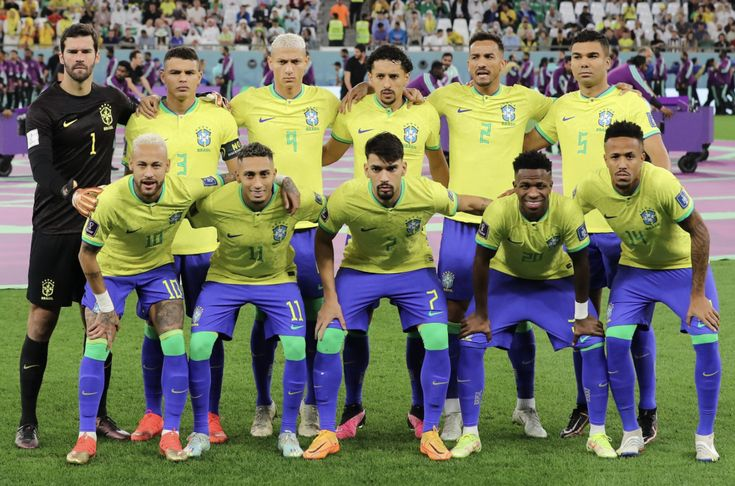
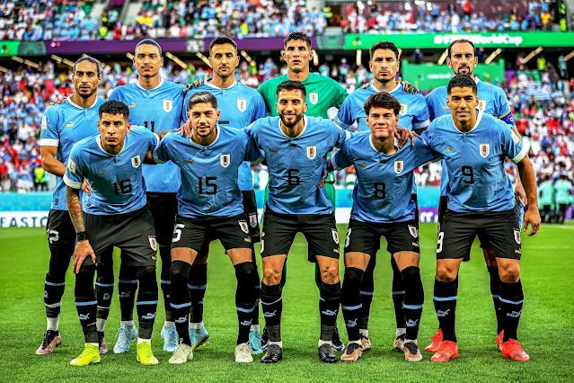

Historia del Fútbol
El fútbol se originó en Inglaterra en el siglo XIX. Es el deporte más popular del mundo, jugado y seguido por millones de personas.
Reglas Básicas
- 11 jugadores por equipo, incluyendo un portero.
- Dos tiempos de 45 minutos cada uno.
- El objetivo del juego es marcar más goles que el oponente.
Selecciones Históricas

Verdeamarelha - Brasil, ícono mundial del fútbol.

La celeste - Uruguay, primera selección campeona del mundo.
Mejores Jugadores de la Temporada
| Jugador | País | Goles |
|---|---|---|
| Luis Suárez | Uruguay | 21 |
| Lionel Messi | Argentina | 18 |
| Kylian Mbappé | Francia | 22 |
Tabla de Posiciones - Selecciones
| Pos. | Selección | PJ | Puntos |
|---|---|---|---|
| 1 | Argentina | 6 | 18 |
| 2 | Brasil | 6 | 15 |
| 3 | Uruguay | 6 | 13 |